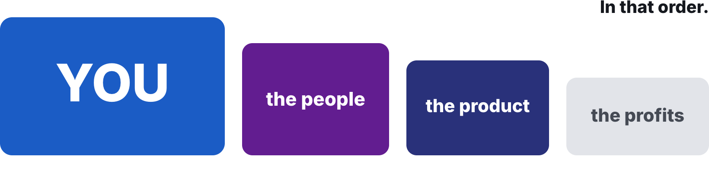
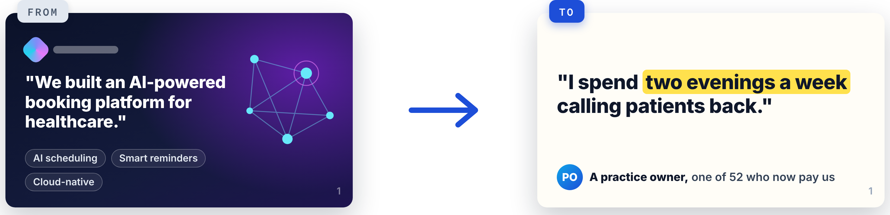
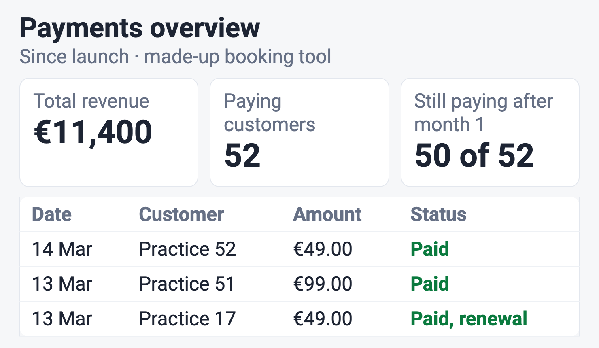

- 1Open the link
github.com/BaNburger/AmbitiousEntrepreneurship - 2Go to modules
then 12-fundraising-demo-day - 3Click the lecture PDF
M12_Lecture_Fundraising-Demo-Day.pdf, download top right
Module 12 · Ambitious Entrepreneurship
Fundraising & Demo Day
Can you tell the story, and show the money?
Course path
- 00
- 01
- 02
- 03
- 04
- 05
- 06
- 07
- 08
- 09
- 10
- 11
- 12
Course material · scan now
All slides live on GitHub
The newest version, free, no account needed
Where we are · the course
The last step is to show the money
Thirteen sessions from first idea to first revenue. What teams have by now:
Revenue you can prove
Prototype to product (M09)
Prototype to product (M09)
A North Star and its drivers
Product management (M10)
Product management (M10)
Ten pitch slides, drafted ugly
Founder health (M11)
Founder health (M11)
Check-in · Show of hands
What's your revenue number?
- Revenue from outside your social graph, so far
- Paying customers
- Your biggest win
Pivot or persevere
Under your line? That is a decision, not a failure
Your last test: your revenue against your line
New here, or missed a module?
Seven words this deck assumes
Social graphPeople you knew before this venture. Their money does not count (rubric)
Kill lineA count, a date and what you then do, written before the data comes in. From The kill decision (M07)
Company lineThe kill line for the whole company, in your Kill Criteria Log. Write yours, or take ours from the homework
Evidence packYour Student Toolkit, with the proof of each payment
Verdict sheetWhere your team writes Go, Pivot or Kill with its evidence. From The kill decision (M07)
Five-year hypothesisYour bet on how the world looks in five years. From Finding ideas (M02)
North StarThe one number that counts the value paying customers get. From Product management (M10)
Chapter 1 of 10
Previously on Ambitious Entrepreneurship
Where twelve modules took you, and what still matters at Demo Day.
Previously · Product management (M10)
Two stages behind you. Now the growth phase
Previously · Founder health (M11)
You first, then the people, the product, the profits

Today
Can you tell the story, and show the money?
Chapter 2 of 10
Your presentations
Three minutes per team on revenue you can prove, and your biggest win.
Your presentations · the revenue board
Show us where you're at in 3 minutes or less!
Facts
Your venture- North Star and its number
- Your pipeline founder
- Scary bits you put first
Numbers
Revenue with proof- Outside your social graph
- Against €2,000 and €5,000
Quotes
A paying customer- Word for word
- With their role
Images
Proof and draft- Dashboard or invoices, cropped
- Your ugly pitch draft
Nothing about the maps, the stop lines or how anyone is doingWhat did you do?What did you learn?How can we help?
Input 1 of 5 · Chapter 3 of 10
Size it: who funds the tail
Why venture capital only funds companies that could return the whole fund.
Input 1 of 5 · Size it · three questions
Who will fund you?
1
What do investors fund?
2
What do they ask of every company?
3
How predictable is success?
Why investors care · from Team (M01)
Investors fund the tail, not the average
6% of deals made 60% of the returns
Deals that returned 10× or more · share of all deals
6%
What those deals returned · share of all returns
60%
Deals that returned less than they cost · about half
about 50%
Fund arithmetic
Investors ask one thing. Could this return the fund?
Illustrative arithmetic for a €100m fund
Research
"The probabilities of success are low, extremely skewed, and unknowable until an investment is made"
Gate question · hands
Could your company return a whole fund?
- Yes, no or don't know
Input 1 of 5 · Size it · the answers
Size it: investors fund the tail
1
What do investors fund?
The tail, not the average: 6% of deals made 60% of the returns
2
What do they ask of every company?
Could this return the whole fund?
3
How predictable is success?
Low, extremely skewed and unknowable until you invest, the research says
Input 2 of 5 · Chapter 4 of 10
Grow it: how big can it get?
Why founders in small markets build for the world, and how you start.
Input 2 of 5 · Grow it · three questions
How big can it get?
1
Why do founders from small countries go global?
2
Why is a big home market a risk?
3
How do you start?
Home markets
Ten million people can't carry a software giant
Population 2025, to scale
Output per head
Per head, Sweden and Israel build four times what Germany does
Companies that reached USD 1 bn, per million people. The gap depends on the list
Three mini cases
Home is a small share of their sales
Share from the home country in magenta, to scale
The golden cage
A big home market is a golden cage
Comfortable for years, then the ceiling
Bastian's view
A pattern in six countries, not a law. Draghi names US capital and a bigger market as the pull
When to go
Design global, launch one market at a time
The US came years after launch, to scale
Index Ventures
60% of European founders had the US in their top three markets before they expanded there
Day one
Plan five things from day one
Cheap now, expensive later
The trajectory
Home carries the first €1m, not the next tenfold
Revenue on a log scale. Not a scientific chart
Now you · as a team · 4 minutes
Pick your second market today
!YOUR SECOND MARKET
One country, five names, one fix
Like this made-up team: "The Netherlands. Same pain, card payments, call booked for Thursday."
- Name the country where your problem costs most
- Find five people there who have it, by name
- List what breaks there: language, currency, law, payment
- Book one conversation abroad before Demo Day
Output A country, five names, one thing to fixMinutes 4
Input 2 of 5 · Grow it · the answers
Grow it: design global, launch at home
1
Why do founders from small countries go global?
Ten million people can't carry a software giant
2
Why is a big home market a risk?
It is a golden cage: comfortable for years, then the ceiling
3
How do you start?
Design global, launch one market at a time, plan five things from day one
Input 3 of 5 · Chapter 5 of 10
Fund it: raise or don't
Which money fits the company you want to build, and when to take it.
Input 3 of 5 · Fund it · three questions
Do you need investors at all?
1
What is the first question?
2
Which money fits?
3
What protects you now?
The first question
Default alive or default dead?
Will revenue cover your costs before the cash runs out?
Now you · alone or as a team · 3 minutes
Work out yours in three minutes
!DEFAULT ALIVE
Three numbers, one answer
From your Pipeline and your bank account
- Costs a month, with the pay you need
- Cash today
- Revenue a month, and its growth over three months
Output Alive or dead, and the month revenue meets costsMinutes 3

Unit economics
Growth pays when a customer returns three times its cost
Rules of thumb, not laws
Sources of money
Pick the money that fits the company you want
Raise from strength, never to survive
During a raise
One founder raises, the others keep selling
Metrics that drop during a raise can kill the deal

Moats now
Code is no longer a moat. Customers are
In software, a patent counts once customers exist
Optional · when you raise
Valuation decides how much of your company you sell
Ownership = investment ÷ post-money
Pre-money, what the company is worth before the money comes in.
Post-money, pre-money plus the new money.
What drives it: team, market, traction, moat, the market mood and your leverage.
20%Investor
80%Founders
Pre-money€4mInvestment€1mPost-money€5mInvestor owns1 ÷ 5 = 20%
Optional · when you raise
Know these five terms before you sign
Five of the twelve on a typical term sheet. Get a startup lawyer
| Liquidation preference | 1× non-participating is standard. Avoid 2× or participating |
| Anti-dilution | Weighted average is fair. Full ratchet is harsh |
| Option pool | Negotiate whether it comes out of the pre-money |
| Board | Aim for a founder majority early |
| Vesting | Four years with a one-year cliff is common |
Optional · when you raise
Plan four to six months for a raise
10 to 22 weeks, longest stage drawn
Optional · when you raise
Eight ways founders botch a raise
1 Raising too early
2 Raising too much or too little
3 A slow process
4 Not knowing your numbers
5 Ignoring investor fit
6 Weak storytelling
7 No relationships before you raise
8 Neglecting the business while raising
Input 3 of 5 · Fund it · the answers
Fund it: raise from strength, never to survive
1
What is the first question?
Default alive or dead? Burn, cash and growth tell you
2
Which money fits?
Customers' money first. Raise from strength, never to survive
3
What protects you now?
Not code. Distribution, network effects and data, brand and trust
Input 4 of 5 · Chapter 6 of 10
Pitch it: proof beats promises
What makes five minutes convincing when every team already has a deck.
Input 4 of 5 · Pitch it · three questions
What makes five minutes convincing?
1
What makes a good pitch?
2
How do you open?
3
What carries it?
The Sequoia order · re-shown from Kickoff (M00)
You hold the ten slides. Now prove them
A good pitch
A good pitch is legible, simple and obvious
1Legible slides. Even people with bad sight and no idea of your business can read them
2Simple ideas. Understood by people with no clue about your technology
3Obvious conclusions. Everyone nods at the end
Pitch tip 1 of 2
Open with the problem in your customer's words
Let them feel the pain, then show the size

Pitch tip 2 of 2
Why now is your bet on the world in five years
From your Finding ideas (M02) hypothesis
Sequoia asks
"Nature hates a vacuum—so why hasn't your solution been built before now?"
You answer
Your hypothesis about the world in five years, and the customers who already live there
Proof beats promises
1number
The one that shows people want this. Write it down now.
Like "50 of 52 practices still pay after month one"
Demo Day briefing
Demo Day runs on proof
The jury looks for evidence, decisions, verified revenue and a story that survives questions
- 10′Proof on screenDeck, dashboard or invoices, one number
- 50′Pitch on proof5 minutes pitch, 5 minutes questions per team
- 30′Decide what comes nextVerdict drafted, meeting booked, group date
Demo Day minimum. €2,000 verified minimum + evidence pack. The €10,000 club is open.
Solo?
Hold Step 3 with a mentor
Input 4 of 5 · Pitch it · the answers
Pitch it: proof beats promises
1
What makes a good pitch?
Legible slides, simple ideas, obvious conclusions
2
How do you open?
With the problem in your customer's words, then its size
3
What carries it?
One number that shows people want this, and proof on screen
Input 5 of 5 · Chapter 7 of 10
Steer it: after Demo Day
Decide on the company with the whole course's evidence, then keep going.
Input 5 of 5 · Steer it · three questions
What happens after Demo Day?
1
How do you decide what comes next?
2
If you go on, what do you settle?
3
What keeps you selling?
Where to go from here?
You took the first step. Now keep going
The verdict
Go, pivot or kill, on the whole course's evidence
Your company line, the kill line you wrote for the company, decides first
Verdict sheet
Provisional on Demo Day, confirmed within seven days
Going on?
Settle who does what and who owns what
Written in your Team sheet, every founder's yes
After the course
Keep your group. It keeps you selling
Numbers every week, a meeting every two weeks. No group? Start one with two other teams
- Day 1Meet, 45 minutes at most3 to 7 teams at your pace
- Day 1One two-week goal per teamLearning, revenue, lasting value
- Day 7Share your numbersEvery week
- Day 14Target against actualCandid. Hit every goal? Set bigger ones
Before you leave
Who is your next outside meeting with?
- A name and a date
Input 5 of 5 · Steer it · the answers
Steer it: decide on evidence, then keep going
1
How do you decide what comes next?
Go, pivot or kill on the whole course's evidence. Your company line first
2
If you go on, what do you settle?
Who does what and owns what, the next revenue target and kill line
3
What keeps you selling?
Your group: numbers every week, a meeting every two weeks
Chapter 8 of 10
Wrap-up and check-out
Two pictures to keep, three reflections and your homework.
Recap · picture 1 of 2
Home carries the first €1m, not the next tenfold
Recap · picture 2 of 2
Default alive or default dead?
Reflection 1 of 3 · the content
What could you apply?
🛠️
What could you apply?
🤕
What gave you a hard time?
Reflection 2 of 3 · the process
Man vs. machine
🤖
Where did AI actually help you?
🧠
Where was your genius needed?
🕴️
What are your best hacks to share?
Reflection 3 of 3 · the results
Rose, thorn, bud
🌹
What was the breakthrough today?
🌵
What was the hardest part today?
🌱
What is an idea/feature you didn't have time to finish, but want to explore later?
Reach €10,000 cumulative revenue from outside your social graph by Demo Day, rehearse your pitch with three outsiders who can repeat your problem and your one number, and within seven days of Demo Day write your verdict on the company with what it needs.
Floor · the Demo Day minimum, verified
€2,000
Full bar · the €10,000 club
€10,000
Ours. If on Demo Day we are default dead and our revenue of the last four weeks is no higher than the four weeks before, we stop and close the company well.
The learning floor is the Demo Day minimum of €2,000 verified with your evidence pack, one such outsider and your written verdict.
Write your company line in the Kill Criteria Log before Demo Day, or take ours.
Homework · how to do it
Sell daily, rehearse with outsiders, then decide
1
Write your company line today.
2
Sell every day. Ask customers for referrals.
3
Check default alive with the calculator.
4
Pick the money that fits. Customers first. A grant buys time, not proof. Investors only if you could get very big, raised from strength. A patent counts as a moat once customers exist.
5
Name your second market, where your problem costs most. Find five people there, book one call.
6
Rehearse with outsiders. Five minutes in Sequoia's order, then ask them for your problem and your one number. Wrong? Rewrite your opening. Watch out. Friends nod. Pick people who could pay.
7
Ask AI for a blind read of your pipeline notes, names removed. Fix the pitch where it disagrees.
8
Decide within seven days. Your line first, then Go, Pivot or Kill (GPK).
Homework · what you come back with
Good is proven, repeated and decided
GOOD
WEAK
Revenue
€11,400 from 52 practices, on the dashboard
€9,000, €4,000 of it a favour
Pitch
Three outsiders said "call-backs" and "50 of 52 stay"
Rehearsed with each other
Company
Go on, plan, angel call, group on the 14th
"We'll decide after the exams"
References · 1 of 3
Sources in this deck
- Autio, E., Sapienza, H. J., & Almeida, J. G. (2000). Effects of age at entry, knowledge intensity, and imitability on international growth. Academy of Management Journal, 43(5), 909–924.
- Bitkom. (2023, September 18). Startup Report 2023 [Press release].
- Deutscher Startup Monitor. (2023). Startup-Verband and PwC.
- DeepL. (2024, February 22). DeepL to open first U.S. office as adoption in the market soars [Press release].
- Dealroom. (2026). Unicorns [Country lists for Sweden, Israel, Germany, France, Italy and India]. Updated October 2026.
- Draghi, M. (2024). The future of European competitiveness, Part A. European Commission.
- Entrackr. (2021, March). Zoho's profit grows to Rs 801 Cr in FY20.
- Evans, B. (2016, April 28). In praise of failure.
References · 2 of 3
Sources in this deck
- EXIST. (2026). exist [Federal programme for founders from science and research]. https://www.exist.de
- Gartner. (2025, November 18; 2026, February 3). IT spending forecasts, India and worldwide [Press releases].
- Graham, P. (2015, October). Default alive or default dead?
- Graham, S., Merges, R., Samuelson, P., & Sichelman, T. (2009). High technology entrepreneurs and the patent system. Berkeley Technology Law Journal, 24(4).
- Horowitz, B. (2014). The hard thing about hard things. HarperCollins.
- Index Ventures. (2025). Winning in the US.
- Kerr, W. R., Nanda, R., & Rhodes-Kropf, M. (2014). Entrepreneurship as experimentation. Journal of Economic Perspectives, 28(3), 25–48.
- Klarna Group plc. (2026). Form 20-F for fiscal year 2025.
References · 3 of 3
Sources in this deck
- Mudambi, R., & Zahra, S. A. (2007). The survival of international new ventures. Journal of International Business Studies, 38(2), 333–352.
- Ries, E. (2011). The lean startup. Crown Business.
- Sawers, P. (2011, July 14). Spotify, the story so far. The Next Web.
- Sequoia Capital. (2019, March 15). Writing a business plan.
- Wix.com Ltd. (2026). Form 20-F for fiscal year 2025.
- World Bank. (2026). Population, total (SP.POP.TOTL).
See you at Demo Day!
Bring your proof.
Module 12 · Fundraising & Demo Day · Case discussion · about 90 minutes
Case discussion: Personio
Four Munich founders in spring 2016 decide whether to take outside money now.
Module 12 · Ambitious Entrepreneurship · Case discussion
Personio: Seed Round or Another Year on Revenue
Munich, spring 2016. Take outside money now, and from whom, or keep growing on customers' money?
Case · Exhibit 2 and the story to spring 2016
Take outside money now, or another year on revenue?
- 2015Four founders who met at the CDTMMunich's Center for Digital Technology and Management. HR software, a pilot phase
- Sep 2015From EUR 59 and 99 a monthGerman and English, no minimum term
- Jan 201610 customersAbout 20 at the start of 2016 by another count
- Early 2016Goal: the leading solution in EuropeFor small and mid-sized firms, set in a workshop, recalled in 2021
- Spring 2016Eight employees grown on revenueFounders unpaid by Forstmeier's account, looking for investors
Case · vote 1 of 2
It is spring 2016. Do you take outside money now?
Option 1
Raise now
Option 2
Another year on revenue
Option 3
Raise only from investors who back the broad product
Working alone?
Pick one and write three lines on why, with evidence from the case
Case · Exhibit 1 · September 2015
Two plans, from EUR 59 and 99 a month
Case · the board plan
Evidence left, the two paths in the middle, investors right
The evidenceRevenue side: prices, customers, prepaymentsCost side: eight employees, founders unpaid, no marketing budgetUnknown: revenue, cash, costs
| Raise now | Another year on revenue | |
|---|---|---|
| Growth | ||
| Founders' pay | ||
| Control of the product | ||
| Time fundraising takes | ||
| The European goal |
From whomA narrower productThe broad productSpeed
Case · Exhibit 3 · enterprises by people employed, 2013
Germany has about a quarter of the EU-28's firms with 20 to 249 people
How big the European goal was
Case · vote 2 of 2
Same question, after the discussion. Do you take outside money now?
Option 1
Raise now
Option 2
Another year on revenue
Option 3
Raise only from investors who back the broad product
Case · bridge
Your money question, before Demo Day
Are you default alive with the pay you need? Which money fits? Write it into your Team sheet's Money row.
See you at Demo Day!
Bring your proof, and your money decision.
Module 12 · Demo Day · 90 minutes
Demo Day: pitch on proof, then decide
Pitch your venture on proof, then decide what comes next for your company.
Module 12 · Ambitious Entrepreneurship · Demo Day
Demo Day
Can you tell the story, and show the money?
Reach €10,000 cumulative revenue from outside your social graph by Demo Day, rehearse your pitch with three outsiders who can repeat your problem and your one number, and within seven days of Demo Day write your verdict on the company with what it needs.
Floor · the Demo Day minimum, verified
€2,000
Full bar · the €10,000 club
€10,000
Ours. If on Demo Day we are default dead and our revenue of the last four weeks is no higher than the four weeks before, we stop and close the company well.
The learning floor is the Demo Day minimum of €2,000 verified with your evidence pack, one such outsider and your written verdict.
Write your company line in the Kill Criteria Log before Demo Day, or take ours.
Demo Day · step 1 of 3
Put your proof on screen
1STEP 1 · 10 MIN
PUT YOUR PROOF ON SCREEN
Every claim can be checked on the spot
- Load your deck, ten slides in Sequoia's order
- Open your proof, dashboard or numbered invoices
- Write your one number on a card
- Show the jury your Toolkit on request
Output Deck, proof and your one number, readyMinutes 10
Demo Day · step 1 · proof on screen
Show the totals, hide the names

12- 1The total from outside your social graph, and your one number
- 2Each payment, names hidden
Weak is "The screenshot is on my phone somewhere"
Arrived empty-handed?
No revenue? Pitch what you tested and killed
A well-argued kill can earn an A. No company line? Write one now.
Demo Day · step 2 of 3
Pitch on proof
2STEP 2 · 50 MIN
PITCH ON PROOF
Five minutes a stranger can repeat, then honest answers
- Open with the problem in a customer's words
- Say why now, your bet on five years out
- Show the proof, then your one number
- Stop at five minutes, answer for five
- Note each question you could not answer
Output Pitch given, open questions notedMinutes 50
Demo Day · step 3 of 3
Decide what comes next
3STEP 3 · 30 MIN
DECIDE WHAT COMES NEXT
The course ends. Your company decides whether it does
- Read your company line. Crossed? Act on it
- Draft your verdict, Go, Pivot or Kill
- Going on? Write the plan in your Team sheet
- Book your next outside meeting now
- Set your group's next date in the tracker
Output Verdict drafted, meeting booked, group date setMinutes 30
You are an entrepreneur. Show the world what you are capable of
See you on the other side!
Best, Basti